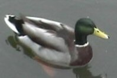

Monday, June the 6th, 2005
back to: title, date or indexes

I was alerted by an article in today's Guardian to the existence of the highly commendable Duck Density organisation. Devoted to the task of measuring duck densities, as their name suggests, this splendid body counters the belief of many that all university students are feckless, beer-swilling rascals. Clearly some of them have their heads screwed on and their priorities right.
“Birds that go on water” is Duck Density's satisfyingly simple definition of what a duck is, and although the website could benefit from a little more gravitas, I can only applaud. I am sure you will join me.